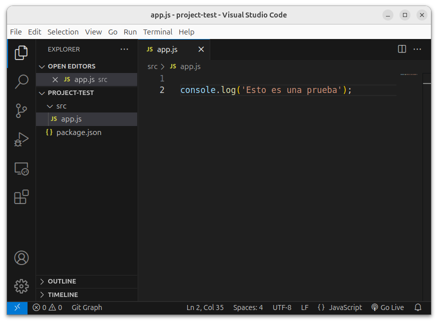
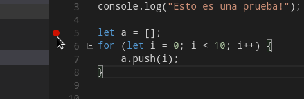

Javascript en el servidor: Node.js

Introducción
Node.js (o simplemente Node) es un entorno de ejecución que permite ejecutar Javascript fuera del navegador.
Se distribuye bajo una licencia MIT.
Principalmente dirigido a servidores web, pero puede utilizarse para implementar cualquier tipo de aplicación.
En este curso utilizaremos Node para implementar la funcionalidad del lado del servidor en las aplicaciones web.
Versiones
- v22.4.1 LTS, que utilizaremos en este curso.
- v23.7.0, que es la versión más reciente.
LTS = Long Term Support
Las versiones LTS tienen suporte garantizado durante 18 meses a partir del momento en el que se convierten en LTS.
Las versiones 23.X.X rompen la compatibilidad con las 22.X.X. Algunos programas escritos para Node 23 pueden requerir modificaciones para ejecutarse bajo Node 22.
Instalación
Puede descargarse desde:
https://nodejs.org/en/download/releases/
- Las versiones para Windows y Mac incluyen un instalador.
- Desde GNU/Linux se puede:
- Utilizar el gestor de paquetes de la distribución.
- Utilizar nvm (http://nvm.sh), que permite mantener varias versiones de Node en un mismo sistema.
- Descargar los binarios desde la URL anterior.
Ejecución de un script
Basta con teclear:
# node nombreScript.js
Si se desea ejecutar el intérprete (REPL):
# node
REPL = Read-Eval-Print Loop
El intérprete permite evaluar las expresiones Node que se introduzcan por teclado.
Ejemplo de sesión con el intérprete
# node
> 5 + 6
11
> let x = 4 + 5
undefined
> console.log("Hola");
Hola
undefined
> x
9
> function suma(x,y) {
..... return x + y;
..... }
undefined
> suma(4, 5)
9
> .exit
Comandos del intérprete
-
.exit
Sale del intérprete. -
.load script.js
Ejecuta las sentencias del fichero dado. -
.save script.js
Guarda todas las expresiones evaluadas en un fichero. -
.break
Cancelar introducción de expresión actual. Útil cuando se queda algún paréntesis abierto en la entrada.
Proyectos Node
El uso del ejecutable node para proyectos grandes resulta algo tediosa, porque estos requieren, entre otras cosas:
- Gestión de dependencias (librerías externas).
- Arranque y parada del sistema.
Herramientas para gestionar proyectos
- Desde la línea de comandos:
npm, pnpm para proyectos más complejos - Desde un IDE: Visual Studio Code.
NPM (Node Package Manager)
Es una herramienta que se incluye con la distribución de Node. Permite:
- Crear proyectos vacíos.
- Gestionar las librerías de las que hace uso un proyecto, consultando una base de datos pública (NPM Registry) que indica desde dónde descargarlas.
- Gestionar scripts: arranque del sistema, parada, ejecución de tests, etc.
Más información: https://www.npmjs.com/
Creación de un proyecto con npm
Ejecutar desde la línea de comandos:
# npm init
Se solicitará información sobre los datos del proyecto:
...
name: (app) project-test
version: (1.0.0) ↲ (Pulsar intro)
description: Esto es un proyecto de prueba
entry point: (index.js) src/app.js
test command: ↲
git repository: ↲
keywords: node proyecto aw sw prueba
author: Iván Martínez-Ortiz
license: (ISC) Apache-2.0
About to write to /home/ivan/Documentos/aw-sw/pruebas/prueba-proyecto
/package.json:
...
Is this ok? (yes) yes
Se creará un fichero package.json con el siguiente contenido:
{
"name": "project-test",
"version": "1.0.0",
"description": "Esto es un proyecto de prueba",
"main": "src/app.js",
"type": "module", Habilitamos módulos ESM
"scripts": {
"test": "echo \"Error: no test specified\" && exit 1"
},
"keywords": [ "node", "proyecto", "aw", "sw", "prueba" ],
"author": "Iván Martínez-Ortiz",
"license": "Apache-2.0"
}
Por defecto node usa módulos CommonJS, para habilitar ES Modules tenemos que:
- Nombrar todos los archivos con extensión
.mjs - Usar
"type": "module"→ Esta es la opción recomendada
Veremos los módulos más adelante.
-
Atributo
scripts: permite añadir comandos para arrancar el programa, detenerlo, etc.
Por ejemplo, podemos añadir:
para poder arrancar el sistema mediante... "scripts": { "test": "jest", "start": "node src/app.js", "otro": "node script/cli-tool.js" }, ...
ejecutar los test mediante# npm start
o ejecutar otros scripts que definamos con# npm test# npm run otro
Si no se introduce un nombre para repositorio Git, es posible declarar el paquete como privado añadiendo:
{
...
"author": "Iván Martínez-Ortiz",
"license": "Apache-2.0",
"private": true
}
De este modo evitaremos warnings sobre la ausencia de un repositorio.
Uso de Visual Studio Code
Es un IDE multiplataforma con licencia GPL.
Incorpora herramientas para la edición de código en Javascript y la gestión de proyectos en Node.
VS Code se apoya en npm para gestionar los proyectos Node.
Basta con abrir la carpeta donde se encuentre el fichero package.json de nuestro proyecto Node.
Archivo → Abrir carpeta... (Ctrl+K Ctrl+O)
Podemos ejecutar el proyecto y los tests mediante la opción Terminal → Run task..., o bien introduciendo en la paleta de comandos (Ctrl+Shift+P) la orden task seguida del nombre de la tarea a ejecutar:
VS Code incluye un depurador de Javascript.
Introducimos puntos de ruptura utilizando el margen izquierdo del editor.
Después utilizamos la opción del menú Run → Start Debugging (F5)
Módulos en Node
Existen tres tipos de módulos:
- Módulos fichero.
Forman parte de un proyecto, pero no están pensados para ser reutilizados como librerías. - Módulos core.
Vienen incluidos con Node. Proporcionan operaciones básicas (ficheros, servidores web, sistema operativo, etc.). - Módulos paquete.
Librerías externas, gestionadas por npm.
Crear un módulo fichero con una única función
Se crea un fichero Javascript con la función a definir y ésta se exporta:
function fibAux(n) {
if (n === 0) {
return 0;
} else if (n === 1) {
return 1;
} else {
return fib(n-1) + fib(n-2);
}
}
exportfunction fib(n) {
console.assert(typeof(n) === "number", `${n} is not a number`);
return fibAux(n);
}
Suponemos que el código anterior está contenido en un fichero moduloFib.js.
Ahora hacemos uso de la función fib desde otro fichero:
// testModules.js
// --------------
import { fib } from "./moduloFib.js";
console.log(fib(10));
Imprime:
55
La ejecución de import { x, y, z } from "modulo.js":
- Carga asíncronamente
modulo.jspasado como parámetro. - Esta versión se denomina importación por nombre
- Hay otras maneras de importar otras declaraciones.
Podemos renombar la declaración importada.
import { fib as myFib } from "./moduloFib.js";
console.log(myFib(10));
Esto es útil para prevenir conflictos de nombres entre los distintos módulos. Supongamos otro módulo otroModuloFib.js que también exporta una función fib:
import { fib as myFib } from "./moduloFib.js";
import { fib as otroFib } from "./otroModuloFib.js";
console.log(myFib(10));
console.log(otroFib(10));
Exportar más de una función
Hasta ahora hemos exportado una función con export.
Pero puede asignarse cualquier otro tipo de valor: enteros, arrays, objetos, clases, etc.
Lo más frecuente es que un módulo quiera exportar varias funciones. Para ello usamos export en cada función a exportar del módulo.
Ejemplo: geometria.js
export function areaCuadrado(lado) {
return lado * lado;
}
export function areaCirculo(radio) {
return Math.PI * radio * radio;
}
export function perimetroCuadrado(lado) {
return 4 * lado;
}
export function perimetroCirculo(radio) {
return 2 * Math.PI * radio;
}
Ejemplo de uso:
import * as geometria from "./geometria.js";
console.log(geometria.areaCuadrado(10));
console.log(geometria.areaCirculo(10));
También podríamos importarlas individualmente (recomendado):
import { areaCuadrado, areaCirculo } from "./geometria.js";
console.log(areaCuadrado(10));
console.log(areaCirculo(10));
Lo que no se exporte dentro de un módulo se considera privado al mismo. Esto nos permite modificar la implementación sin alterar la interfaz.
// moduloFib.js
// ------------
const PHI = (1 + Math.sqrt(5)) / 2;
// Cambio la función fibAux por esta:
function fibMasEficiente(n) {
const p1 = Math.pow(PHI, n);
const p2 = Math.pow(1 - PHI, n);
return Math.round((p1 - p2) / Math.sqrt(5));
}
export function fib(n) {
console.assert(typeof(n) === "number",
`fib: ${n} is not a number`);
return fibMasEficiente(n);
}
Importante
A la hora de importar un módulo de tipo fichero mediante import, es necesario indicar el path del fichero que se importa, aunque se encuentre en el mismo directorio.
// Correcto:
import { areaCuadrado, areaCirculo } from "./geometria.js";
// Correcto:
import { areaCuadrado, areaCirculo } from "./aw/librerias/geometria.js";
// Correcto:
import { areaCuadrado, areaCirculo } from "../geometria.js";
// Incorrecto:
import { areaCuadrado, areaCirculo } from "geometria.js";
// Incorrecto:
import { areaCuadrado, areaCirculo } from "geometria.js";
Si no se especifica un path Node entiende que se quiere importar un módulo de otro tipo:
- Módulo core.
- Módulo de tipo paquete.
Módulos Core
Forman parte de la distribución de Node.
También se importan mediante import, pero sin indicar un path relativo.
import * as os from "node:os"; "node:" Introducido en NodeJS 18 para evitar colisiones
console.log(`Nombre del host: ${os.hostname()}`);
console.log(`Directorio personal: ${os.homedir()}`);
import { format } from "node:util";
const mensaje = format("Tienes %d años", 45);
Nombres de módulos core: os, fs, path, http, util, etc.
Módulos de tipo paquete
Son módulos pensados para ser reutilizados e incorporados a otros proyectos.
Se instalan dentro la propia carpeta del proyecto, en una subcarpeta llamada node_modules.
La información de la mayoría de ellos se encuentra en una base de datos pública: NPM Registry.
Se importan con import y, al igual que los módulos core, no se indica el path relativo.
Búsqueda de un módulo de tipo paquete
import * as foo from "foo";
Se busca foo en los siguientes directorios:
node_modules/foo.js../node_modules/foo.js../../node_modules/foo.js../../../node_modules/foo.js- y así sucesivamente, hasta llegar al directorio raíz
Por ejemplo, supongamos que en el fichero /home/manuel/aw/ejemplo.js
buscamos el siguiente paquete:
import * as mimodulo from "mimodulo";
Se buscará en los siguientes directorios:
/home/manuel/aw/node_modules/mimodulo.js/home/manuel/node_modules/mimodulo.js/home/node_modules/mimodulo.js/node_modules/mimodulo.js
Paquetes con varios módulos
Un paquete puede contener más de un fichero .js
En este caso han de agruparse todos los .js en la misma carpeta, y guardar en esta carpeta un módulo index.js que exporte las funciones necesarias de cada uno de los módulos del paquete.
Para importar este paquete mediante import se debe indicar el nombre de la carpeta.
Partimos de esta estructura de directorios:

fib.js
export function fib(n) { ... }
fact.js
export function fact(n) { ... }
index.js
export * from "./fib.js";
export * from "./fact.js";
ejemplo.js
import * as math from "math";
console.log(`fib(6) = ${math.fib(6)}`);
console.log(`fact(6) = ${math.fact(6)}`);
Resultado:
$ node ejemplo.js
fib(6) = 8
fact(6) = 720
Módulos tipo CommonJS
Utilizamos la variable module.exports para exportar funciones / variables:
function fibAux(n) {
if (n === 0) {
return 0;
} else if (n === 1) {
return 1;
} else {
return fib(n-1) + fib(n-2);
}
}
function fib(n) {
console.assert(typeof(n) === "number", `${n} is not a number`);
return fibAux(n);
}
module.exports = fib;
Suponemos que el código anterior está contenido en un fichero moduloFib.js.
Ahora hacemos uso de la función fib desde otro fichero:
// testModules.js
// --------------
const fib = require("./moduloFib.js");
console.log(fib(10));
Imprime:
55
La llamada a require(modulo):
- Ejecuta el fichero
modulopasado como parámetro. - Devuelve el objeto asignado a
module.exports(en este caso, la funciónfib)
El objeto devuelto por require se guarda en una variable que no ha de coincidir necesariamente con el nombre de la función exportada.
const myFib = require("./moduloFib.js");
console.log(myFib(10));
Esto es útil para prevenir conflictos de nombres entre los distintos módulos. Supongamos otro módulo otroModuloFib.js que también exporta una función fib:
const myFib = require("./moduloFib.js");
const otroFib = require("./otroModuloFib.js");
console.log(myFib(10));
console.log(otroFib(10));
Árbol de dependencias
A menudo, la implementación de un proyecto Node requiere la instalación de unos determinados paquetes.
Cada uno de estos últimos pueden requerir la instalación de otros paquetes que, a su vez, requieren de otros paquetes.
Cuando la presencia del paquete X es un requisito para el funcionamiento del paquete Y, decimos que Y depende de X.
La relación de dependencia entre paquetes es transitiva, de modo que se tiene un árbol de dependencias.
Ejemplo

Instalar dependencias con npm
La herramienta npm permite gestionar las dependencias de un proyecto. De hecho, npm fue inicialmente concebido como un instalador de paquetes.
Esta herramienta puede descargar paquetes desde un repositorio, e incorporarlos en nuestro proyecto. https://www.npmjs.com/
Para descargar e instalar un paquete en un proyecto, ejecutar lo siguiente desde el directorio raíz del proyecto:
# npm install nombre_paquete
Por ejemplo, para incorporar el paquete underscore en nuestro proyecto:
# npm install underscore
Descargará la versión más reciente del paquete y la instalará bajo la carpeta node_modules del proyecto (creándola si es necesario)
El comando npm install no solo instala el paquete especificado, sino también sus dependencias.
Por ejemplo al instalar express:
# npm install express
Se instala el paquete express y todo su árbol de dependencias bajo la carpeta node_modules:
node_modules
├── express
├── accepts
├── array-flatten
├── content-disposition
├── content-type
├── cookie
...
NPM modifica package.json
Al instalar una dependencia npm install modifica la propiedad dependencies de package.json:
{
"name": "mi_proyecto",
"version": "1.0.0",
"description": "Prueba de uso de paquetes",
"main": "main.js",
"type": "module",
"scripts": {
"test": "echo \"Error: no test specified\" && exit 1"
},
"author": "Ivan Martinez-Ortiz",
"license": "ISC",
"dependencies": {
"underscore": "^1.8.3",
"express": "^4.14.0"
},
"private": true
}
Instalación global de paquetes
A veces un paquete incorpora ficheros ejecutables diseñados para su uso en cualquier proyecto del sistema (jest, nodemon, rollup, pnpm, etc.)
Para poder ser invocados desde cualquier proyecto, estos ejeutables han de instalarse de manera global.
La instalación de un paquete de forma global puede requerir permisos de administrador en el sistema.
Para instalar un paquete de manera global se ha de especificar la opción -g a npm.
Por ejemplo:
# npm install -g jshint
Además del paquete correspondiente, instalará el ejecutable jshint en la carpeta ${prefix}/bin.
Otras opciones de npm
-
npm ls
Muestra el árbol de dependencias del proyecto actual. -
npm search term
Busca los paquetes del repositorio node cuyo nombre contengaterm. -
npm update nombre_paquete
Actualiza un paquete a la útima versión disponible. -
npm dedupe
Reorganiza la carpetanode_modulespara evitar duplicidades. -
npm publish
Sube los datos del proyecto actual en el NPM Registry.
Ejemplo: listar árbol de dependencias
# npm ls
mimodulo@1.0.0
├─┬ express@4.14.0
│ ├─┬ accepts@1.3.3
│ │ ├─┬ mime-types@2.1.12
│ │ │ └── mime-db@1.24.0
│ │ └── negotiator@0.6.1
│ ├── array-flatten@1.1.1
│ ├── content-disposition@0.5.1
│ ├── content-type@1.0.2
│ ├── cookie@0.3.1
│ ├── cookie-signature@1.0.6
│ ├─┬ debug@2.2.0
│ │ └── ms@0.7.1
│ ├── depd@1.1.0
│ ├── encodeurl@1.0.1
│ ├── escape-html@1.0.3
│ ...
└── underscore@1.8.3
Distribución de un proyecto
Cuando se quiere distribuir un proyecto o publicar en un repositorio (p.ej. GitHub), no es necesario incluir el directorio
node_modules con las dependencias.
Basta con distribuir los ficheros package.json y package-lock.json junto con el proyecto.
Mediante el comando:
# npm install
se reconstruirá la carpeta node_modules a partir de la información contenida en package.json y package-lock.json, descargando los paquetes que sean necesarios.
Modelo asíncrono
Node utiliza un modelo de entradas y salidas asíncronas con el fin de permitir el desarrollo de aplicaciones altamente concurrentes.
Este modelo resulta muy útil en un contexto de aplicaciones web, donde un servidor web ha de procesar miles de peticiones por segundo.
Modelos síncrono vs asíncrono
Cuando ejecutamos una operación síncrona, la ejecución del programa se detiene hasta que dicha operación haya terminado.
Ej: Lectura de fichero síncrona

Cuando ejecutamos una operación asíncrona, la ejecución del programa continúa, mientras la operación se realiza de manera «concurrente».
Ej: Lectura de fichero asíncrona

«concurrente»
En realidad, en Node solo hay un hilo en ejecución.
En: Understanding NodeJS event loop (resumida), Understanding NodeJS Event Loop (Detallada)
No obstante, para este curso supongamos que realmente existe concurrencia en las funciones asíncronas.
Un ejemplo: lectura de fichero
El módulo core fs proporciona operaciones para manejar ficheros. Dentro de este módulo hay dos funciones para leer el contenido de un fichero:
readFileSync(fichero, opcs)
Lectura síncrona.readFile(fichero, opcs, callback)
Lectura asíncrona.
Lectura síncrona
import { readFileSync } from "node:fs";
try {
const contenido = readFileSync("FichTexto.txt", { encoding: "utf-8" });
console.log("Fichero leído correctamente:");
console.log(contenido);
} catch (err) {
console.log("Se ha producido un error:");
console.log(err.message);
}
Las operaciones síncronas:
- Bloquean la ejecución del programa mientras se realizan.
- Devuelven el resultado de la operación.
- En caso de error, lanzan excepciones.
Lectura asíncrona
Si la operación de lectura asíncrona se realiza de manera ajena al hilo de ejecución principal del programa, ¿cómo sabemos cuándo ha finalizado?
- Mediante el uso de funciones callback. Modelo antiguo
- Mediante
Promises (promesas) - Usando
async / await. Mejora el uso del mecanismo de promesas.
Funciones callback
Una función callback es una función definida por el programador, pero que no está pensada para ser llamada directamente por este, sino por otro componente del sistema.
Funciones callback: readFile
La función asíncrona readFile (módulo fs), además de recibir el nombre del fichero y las opciones de lectura, recibe un tercer parámetro, que es una función.
Esta función es definida por el programador, pero será llamada por readFile cuando la lectura del fichero haya finalizado.
Es, por tanto, una función callback.
A su vez, la función callback recibe dos parámetros:
- Un objeto de la clase
Error, en el caso en que la lectura haya fallado.
Si no ha fallado, toma el valornull. - El contenido del fichero leído, en el caso en que se haya leído correctamente.
Si ha fallado, toma el valorundefined.
import { readFile } from "node:fs";
readFile("FichTexto.txt", { encoding:"utf-8" }, ficheroLeido);
// Función callback
function ficheroLeido(err, contenido) {
if (err) {
console.log("Se ha producido un error:");
console.log(err.message);
} else {
console.log("Fichero leído correctamente:");
console.log(contenido);
}
}
Tras la lectura, readFile llamará a la función ficheroLeido.
Las funciones callback suelen definirse directamente como funciones anónimas en la llamada a readFile.
import { readFile } from "node:fs";
readFile("FichTexto.txt", { encoding: "utf-8" }, (err, contenido) => {
if (err) {
console.log("Se ha producido un error:");
console.log(err.message);
} else {
console.log("Fichero leído correctamente:");
console.log(contenido);
}
});
Las operaciones de lectura asíncrona:
- No bloquean la ejecución del programa.
Porque se ejecutan de manera concurrente. - No devuelven ningún valor.
El resultado de la lectura se pasa como parámetro a la función callback. - No lanzan excepciones.
En caso de error, es la función callback quien recibe la excepción como primer parámetro.
Un error frecuente
¡Cuidado con el siguiente código!
let contenidoFichero;
readFile("FichTexto.txt", { encoding: "utf-8" },
(err, contenido) => {
if (!err) {
// Asignamos el contenido a la variable externa
contenidoFichero = contenido;
}
});
console.log(contenidoFichero); // ¿Qué se imprime aquí? → undefined
En el mejor de los casos, la llamada a console.log se ejecutaría después de que la lectura haya finalizado.
Pero esto no ocurre así nunca.
console.log se ejecuta antes de que la lectura termine:
En este caso se imprime undefined, ya que contenidoFichero no ha sido inicializada en el momento de ejecutar console.log.
Moraleja
Si un fragmento del programa depende del resultado de una llamada asíncrona, no debe ir tras dicha llamada:
readFile("fich.txt", (err, contenido) => {
...
});
// hacer algo con el contenido
fs.readFile("fich.txt", (err, contenido) => {
// hacer algo con el contenido
...
});
Servidores web con Node
Recordemos el modelo cliente-servidor aplicado a la web:
El cliente es un navegador web.
El servidor es un programa que está escuchando en el puerto TCP 80.
Cuando el usuario introduce una URL en el cliente se envía una petición HTTP al servidor correspondiente.
Accept: text/html Cabeceras
...
El servidor analiza la petición y la responde.
En este caso, la respuesta sería:
Content-Type: text/html Cabeceras de la respuesta
...
<html lang="es"> Cuerpo de la respuesta
<head>
<title>...</title>
...
Referencias: peticiones HTTP, respuestas HTTP.
Implementaremos la funcionalidad del servidor.
En la fase de desarrollo de una aplicación web se suele utilizar otro puerto distinto del 80. Utilizaremos el puerto 3000.
Servidores web con Node
La creación de servidores requiere el uso de sockets.
Para ello, deberíamos:
- Crear un socket asociado al puerto 80 (o cualquier otro).
- Aceptar peticiones de clientes.
- Analizar sintácticamente la petición HTTP del cliente, que viene como cadena de texto.
- Generar una respuesta en formato HTTP.
Por suerte, hay un módulo que hace todo esto...
El módulo core http implementa un servidor web.
import { createServer } from "node:http";
Los objetos de la clase Server representan servidores web, y son creados mediante la función createServer, que recibe una función callback:
const servidor = createServer((request, response) => {
...
});
La función callback es definida por el programador, y llamada por el módulo http cada vez que algún cliente realiza una petición HTTP.
createServer((request, response) => { /* ... */ });
El parámetro request de esta función callback contiene un objeto de la clase IncomingMessage, con atributos y métodos para acceder a cada componente de la petición: método, URL, cabeceras, etc.
El parámetro response (clase ServerResponse) contiene métodos y atributos que especifican la respuesta HTTP que se devolverá al cliente.
La función createServer tan solo sirve para establecer la función callback que procesa las peticiones, pero no inicia el servidor en ningún puerto.
Para iniciar el servidor debemos utilizar el método listen() del servidor recién creado, indicando el puerto en el que queremos escuchar y (opcionalmente) una función callback que será llamada cuando comience la escucha.
const servidor = createServer(function(request, response) {
// ...
});
servidor.listen(3000, (err) => {
if (err) {
console.log(`Error al abrir el puerto 3000: ${err}`);
} else {
console.log("Servidor escuchando en el puerto 3000.");
}
});
El objeto request
Atributos más importantes de request:
method: método HTTP utilizado (GET, POST, PUT, etc.).url: URL a la que se accede, excluyendo el nombre del servidor.headers: Objeto con las cabeceras de la petición.
Por ejemplo:
const servidor = createServer(function(request, response) {
console.log(`Método: ${request.method}`);
console.log(`URL: ${request.url}`);
console.log(request.headers);
});
Con el servidor arrancado, iniciamos el navegador e introducimos la siguiente dirección:
http://localhost:3000/index.html
Se imprime lo siguiente:
Método: GET
URL: /index.html
{ host: 'localhost:3000',
'user-agent': 'Mozilla/5.0 (X11; Fedora; Linux x86_64;rv:49.0)
Gecko/20100101 Firefox/49.0',
...
} El objeto response
Hasta ahora, cuando introducimos una URL en el navegador, éste se queda «colgado» esperando una respuesta del servidor. Utilizaremos el objeto response de la función callback para responder al servidor. Sus atributos y métodos más importantes son:
statusCode: indica el código de respuesta: 200, 404, etc.setHeader(clave, valor): añade una cabecera a la respuesta.write(str): envia la cadenastren el cuerpo de la respuesta.end([str]): delimita el final de la respuesta.
Ejemplo
const servidor = createServer(function(request, response) {
response.statusCode = 200;
response.setHeader("Content-Type", "text/html");
response.write('<!DOCTYPE html>');
response.write('<html>');
response.write('<head>');
response.write('<title>Página de prueba</title>');
response.write('<meta charset="utf-8">');
response.write('</head>');
response.write('<body></ul>');
for (let i = 0; i < 10; i++) {
response.write(`<li>Item ${i}</li>`);
}
response.write('</ul></body></html>');
response.end();
});
Al acceder a http://localhost:3000:
Esquema general de un servidor
La función callback del servidor devuelve una respuesta en función de la petición recibida.
Una función callback típica tendría la siguiente forma:
const servidor = createServer(function(request, response) {
const method = request.method;
const url = request.url;
if (method === "GET" && url === "/index.html") {
// Servir página principal.
} else if (method === "GET" && url === "/index.css") {
// Servir hoja de estilo.
} else if (...) {
// ...
// ...
// ...
} else {
response.statusCode = 404;
}
});
¡Qué complicado! ¿no?
Esta función callback tendrá que lidiar con:
- Generación de páginas web complejas mediante
response.write(). - Procesamiento de formularios:
urlyquerystring. - Envío de ficheros al servidor.
- Manejo de cookies, sesiones, etc.
El módulo http es de demasiado bajo nivel para estas tareas. Es recomendable el uso de un framework que abstraiga los detalles técnicos.
Continuará...en el siguiente tema.